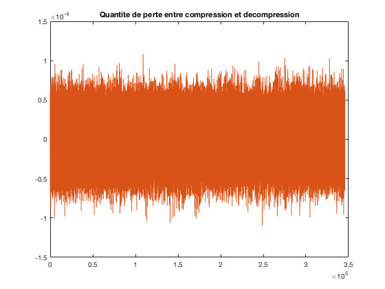

Compression Audio PAO 2017: BAERT Gaetan, QUEFFELEC Octave
Contents
- Etapes Decompression
- ETAPE 1: Lecture fichier a decompresser
- ETAPE 2 : Recuperation entete
- ETAPE 3 : Recuperation donnees compressees
- ETAPE 4 : Transformation des donnees par passage a la dct inverse et restitution de l'ordre initial des echantillons
- ETAPE 5 : Decomposition en 2 canaux L & R
- ETAPE 6: Ecriture des donnees
- ETAPE 7: Evaluation de la perte d'information
Etapes Decompression
ETAPE 1: Lecture fichier a decompresser
filenameD='input.wav'; fileID = fopen(filenameD); InputDD = int16(fread(fileID,'int16')); fclose(fileID);
ETAPE 2 : Recuperation entete
InputD=InputDD; freqD=double(InputDD(1)); nechantD=double(InputDD(2)); taillechD=InputDD(3); taillechD=int32(taillechD); nbclustersD=double(InputDD(4)); maxdctD=InputDD(nbclustersD*taillechD+5+2*(nechantD-1)); MmoyDD=InputDD(5:double(nbclustersD)*double(taillechD)+4); MmoyD=[reshape(MmoyDD,taillechD,nbclustersD)]; MmoyD = double(MmoyD)*double(double(maxdctD)/32767); taillechD=double(taillechD); VclustersD=InputDD(nbclustersD*taillechD+5:nbclustersD*taillechD+5+2*(nechantD-1)-1);
ETAPE 3 : Recuperation donnees compressees
inputSoustraction_iD=InputDD(nbclustersD*taillechD+5+2*(nechantD-1)+1:length(InputDD));
inputSoustraction_iD=double(inputSoustraction_iD)*double(double(maxdctD)/32767);
%recuperation dernier echantillon
dernierEchantSansidctD=inputSoustraction_iD(2*(nechantD-1)*taillechD+1:length(inputSoustraction_iD));
inputsoustraction_i_SansDernierEchantD=inputSoustraction_iD(1:2*(nechantD-1)*taillechD);
dernierEchantD(:,1)=idct(dernierEchantSansidctD(1:length(dernierEchantSansidctD)/2));
dernierEchantD(:,2)=idct(dernierEchantSansidctD(length(dernierEchantSansidctD)/2+1:length(dernierEchantSansidctD)));
ETAPE 4 : Transformation des donnees par passage a la dct inverse et restitution de l'ordre initial des echantillons
on preleve les blocs d'echant d'un meme cluster de inputsouc1DSansDernier
output=[]; EchantD=[]; inputsoustraction_i_DSansDernierEchantD=inputsoustraction_i_SansDernierEchantD; for i =1:nbclustersD nbEchCluster=length(find(VclustersD ==i)); cluster_i=inputsoustraction_i_DSansDernierEchantD(1:nbEchCluster*taillechD); inputsoustraction_i_DSansDernierEchantD=inputsoustraction_i_DSansDernierEchantD(nbEchCluster*taillechD+1:length(inputsoustraction_i_DSansDernierEchantD)); % on supprime les donnes dans inputsouc1DSansDernier uns fois trait? % on forme une matrice d'echant du cluster Mcluster_i=reshape(cluster_i,taillechD,nbEchCluster); %on additionne la moyenne du cluster pour retrouver les donnees %initiales MmoyD_i=MmoyD(:,i); addition=idct(Mcluster_i+(ones(1,size(Mcluster_i,2))'*MmoyD_i')'); %on fais correspondre les echantillons a leur position exacte dans le fichier %origine indiceDonneeCluster=find(VclustersD==i); for j=1:nbEchCluster if rem(indiceDonneeCluster(j),2) > 0.1 EchantD_L(:,(indiceDonneeCluster(j)+1)/2)=addition(:,j); else EchantD_R(:,indiceDonneeCluster(j)/2)=addition(:,j); end end end
ETAPE 5 : Decomposition en 2 canaux L & R
LL=reshape(EchantD_L,[],1);
RR=reshape(EchantD_R,[],1);
% on ajoute le dernier echant
L=[LL;dernierEchantD(:,1)];
R=[RR;dernierEchantD(:,2)];
output=[L R];
ETAPE 6: Ecriture des donnees
audiowrite('output.wav',output,freqD);
ETAPE 7: Evaluation de la perte d'information
figure()
plot(donnees-output);
title('Quantite de perte entre compression et decompression')
